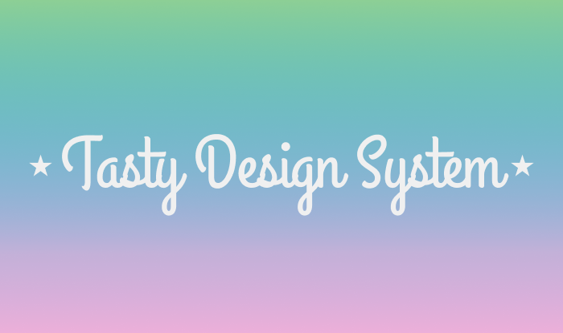

KKV Kampus
Johdonmukainen ja modulaarinen suunnittelujärjestelmä UI-käyttöliittymien rakentamiseen.
Käyttäjäpersoonat & käyttäjäpolku
Nova Design Systemin värit on suunniteltu harmonisiksi ja saavutettaviksi.


Käyttäjätestaus
Käytetyt fontit takaavat hyvän luettavuuden ja hierarkian.


ideaseinä
Design-systeemi sisältää useita uudelleenkäytettäviä UI-komponentteja.

Prototyyppi
Järjestelmä perustuu 12-sarakkeiseen ruudukkoon, joka mahdollistaa responsiivisen rakenteen.


Voit käydä kurkkaamassa protoa!
KKV prototyyppi